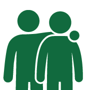

{% extends "bootstrap/base.html" %}
{% block title %}User info{% endblock %}

{% block navbar %}
<div class="navbar navbar-fixed-top">
    <!-- ... -->
</div>
{% endblock %}

{% block content %}
<h1>User {{ kortnummer }}</h1>
<div class="container-fluid" id="content">
    
    <p></p>
        <form action="{{ url_for('toggle', id=rfid, next=request.path) }}" method="get">
            {% if status == 0 %}
            Status Ute:
            <button id="knapp" type="submit" class="btn btn-success">In</button>
            {% else %}
            Status Inne:
            <button type="submit" class="btn btn-danger">Ut</button>
            {% endif %}
        </form>

    <p></p>
    <div id="log"></div>

</div>


{% endblock %}


{% block scripts %}
{{ super() }}
<script src="http://cdnjs.cloudflare.com/ajax/libs/socket.io/1.3.6/socket.io.min.js"></script>
<script type="text/javascript">

    var data_received = JSON.parse('{{userdata|safe}}');

    {% include 'populate-script.html' %}

    $(document).ready(function() {
        //connect to the socket server.
        var socket = io.connect('http://' + document.domain + ':' + location.port + '/gui');
        //var numbers_received = [];

        populate();

            //receive details from server
            socket.on('toggle', function(msg) {
                console.log("Received toggle for " + msg.kortnummer);
                if ( msg.kortnummer == {{ kortnummer }} ) {
                    //maintain a list of ten numbers
                    if (data_received.length >= 10){
                        data_received.pop()
                    }
                    data_received.unshift(msg);
                    populate();
                }
            });
        });

</script>

{% endblock %}